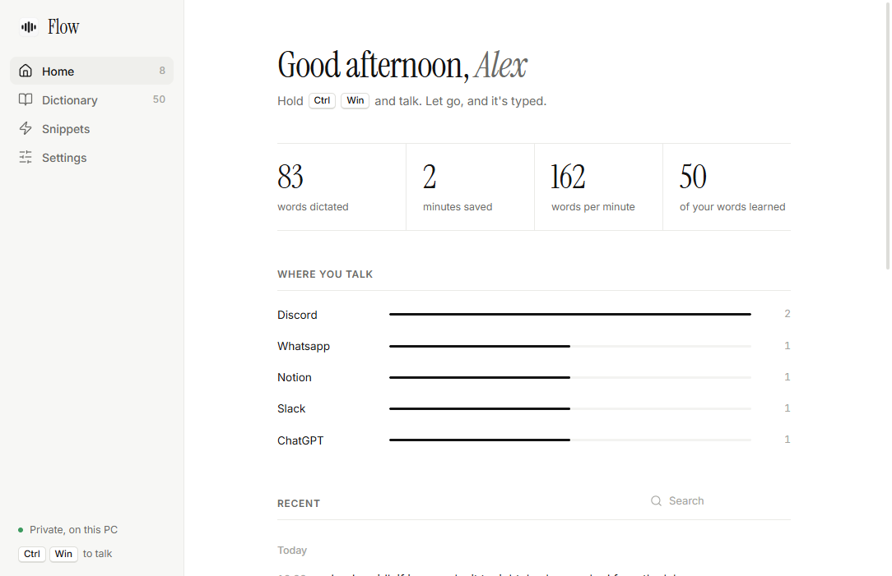

A free, private replacement for Wispr Flow. Hold a key, say what you mean, and it's typed wherever your cursor is. Everything runs on your PC.

Ctrl Win anywhere, in any app.
Ramble, correct yourself, switch languages. It keeps up.
Clean text appears where you were typing.
Speech recognition and cleanup run locally. No account, no subscription, works offline.
Your name, your friends, your jargon. It can read your Obsidian vault and learns from every word you fix.
Lowercase and texting shortcuts in chats, proper sentences in email, your style everywhere.
Cleanup can remove ums and handle "at 2, actually 3", but it is not allowed to add a word you didn't say.
MIT licensed. Use the engine in your own projects in a few lines of Python.